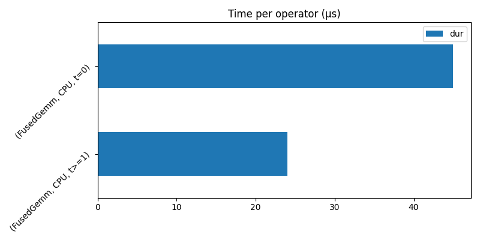
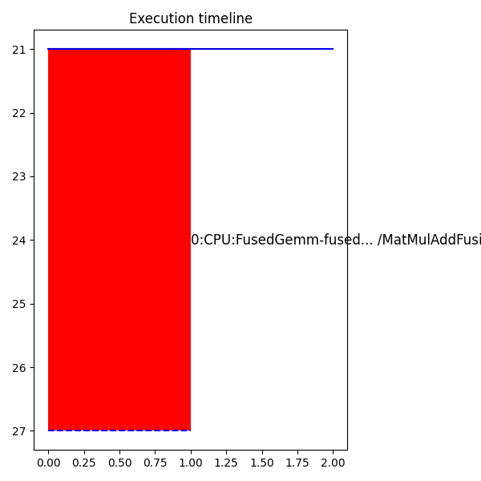

Note
Go to the end to download the full example code.
Profiling onnxruntime execution#
This example shows how to profile the execution of an ONNX model with
onnxruntime and visualize the results with
plot_ort_profile() and
plot_ort_profile_timeline().
Build a small ONNX model#
import os
import tempfile
import numpy as np
import onnx
import onnx.helper as oh
import onnx.numpy_helper as onh
model = oh.make_model(
oh.make_graph(
[
oh.make_node("MatMul", ["x", "W1"], ["h"]),
oh.make_node("Add", ["h", "b1"], ["relu_in"]),
oh.make_node("Relu", ["relu_in"], ["output"]),
],
"test_graph",
[oh.make_tensor_value_info("x", onnx.TensorProto.FLOAT, (2, 4))],
[oh.make_tensor_value_info("output", onnx.TensorProto.FLOAT, (2, 8))],
[
onh.from_array(np.random.randn(4, 8).astype(np.float32), name="W1"),
onh.from_array(np.zeros(8, dtype=np.float32), name="b1"),
],
),
opset_imports=[oh.make_opsetid("", 18)],
ir_version=8,
)
Run with onnxruntime profiling enabled#
from onnxruntime import InferenceSession, SessionOptions
tmpdir = tempfile.mkdtemp()
opts = SessionOptions()
opts.enable_profiling = True
opts.profile_file_prefix = os.path.join(tmpdir, "ort_profile")
sess = InferenceSession(
model.SerializeToString(), sess_options=opts, providers=["CPUExecutionProvider"]
)
x = np.random.randn(2, 4).astype(np.float32)
for _ in range(5):
sess.run(None, {"x": x})
profile_file = sess.end_profiling()
print("Profile written to:", profile_file)
Profile written to: /tmp/tmpli5_yyyy/ort_profile_2026-05-28_00-10-42_694.json
Parse the profiling file into a DataFrame#
from yaourt.tools.js_profile import js_profile_to_dataframe
df = js_profile_to_dataframe(profile_file, first_it_out=True)
print(df[["name", "event_name", "iteration", "dur"]].head(10).to_string())
name event_name iteration dur
0 model_loading_array model_loading_array -1 174
1 session_initialization session_initialization -1 508
2 fused /MatMulAddFusion_kernel_time kernel_time -1 37
3 SequentialExecutor::Execute SequentialExecutor::Execute 0 46
4 model_run model_run 0 63
5 fused /MatMulAddFusion_kernel_time kernel_time 0 8
6 SequentialExecutor::Execute SequentialExecutor::Execute 1 11
7 model_run model_run 1 15
8 fused /MatMulAddFusion_kernel_time kernel_time 1 11
9 SequentialExecutor::Execute SequentialExecutor::Execute 2 14
Plot a summary by operator type#
import matplotlib
import matplotlib.pyplot as plt
matplotlib.use("Agg")
from yaourt.tools.js_profile import plot_ort_profile
fig, ax = plt.subplots(figsize=(8, 4))
plot_ort_profile(df, ax0=ax, title="Time per operator (µs)")
fig.tight_layout()
fig

<Figure size 800x400 with 1 Axes>
Plot the execution timeline#
from yaourt.tools.js_profile import plot_ort_profile_timeline
fig2, ax2 = plt.subplots(figsize=(6, 6))
plot_ort_profile_timeline(df, ax=ax2, title="Execution timeline")
fig2.tight_layout()
fig2

<Figure size 600x600 with 1 Axes>
Cleanup#
os.unlink(profile_file)
import shutil
shutil.rmtree(tmpdir, ignore_errors=True)
Total running time of the script: (0 minutes 0.365 seconds)